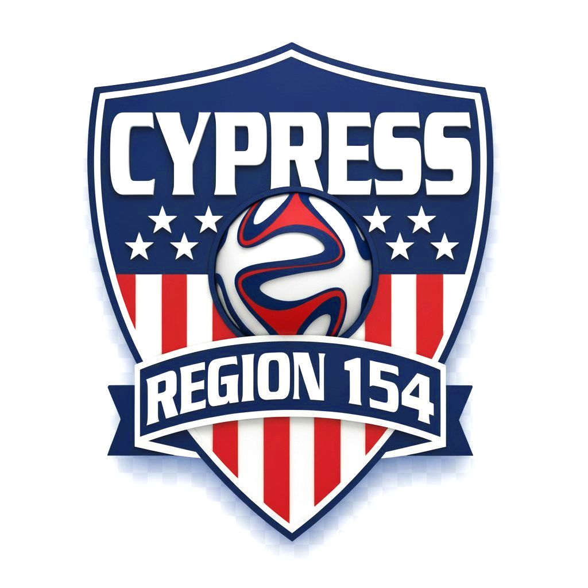

⏱️ Halftime Break
The Volunteer Dashboard Is Taking A Sideline Timeout!
🛡️ Game Day Volunteer Notice
- Are your points safe? Absolutely! All volunteer shift check-ins and referee assignments remain logged and secure in our database.
- Field check-ins: Continue checking in and scanning QR codes at the tents and fields as usual.
- When will it return? The dashboard will blow the whistle and resume live tracking as soon as data calibrations wrap up.